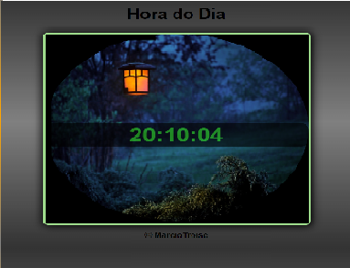
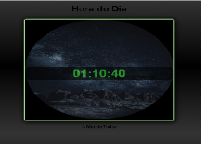

Relógio Virtual
Um relógio virtual que muda a cor de fundo e a imagem de acordo com o período do dia, como mostrado nos exemplos do rodapé da página.
Hora do Dia
- 
- 
Um relógio virtual que muda a cor de fundo e a imagem de acordo com o período do dia, como mostrado nos exemplos do rodapé da página.